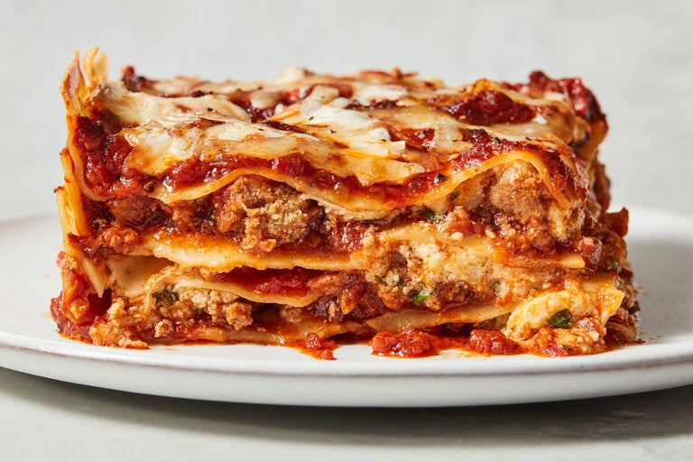

Lasagna

Image of Lasagna
Lasagna is a type of pasta, possibly one of the oldest types,[2] made of very wide, flat sheets. Either term can also refer to an Italian dish made of stacked layers of lasagna alternating with fillings such as ragù (ground meats and tomato sauce), béchamel sauce, vegetables, cheeses (which may include ricotta, mozzarella, and Parmesan), and seasonings and spices.[3] The dish may be topped with grated cheese, which becomes melted during baking. Typically cooked pasta is assembled with the other ingredients and then baked in an oven. The resulting baked pasta is cut into single-serving square or rectangular portions.
Ingredients:
- meat
- sauce
- pasta
- veggies
- cheese
Steps:
- Preheat oven
- Cook meat
- Cook veggies
- Cook pasta unil al dente
- Layer meat, veggies, sauce, and cheese between pasta is baking dish
- Top with sauce and cheese
- Bake for 40-45 minutes